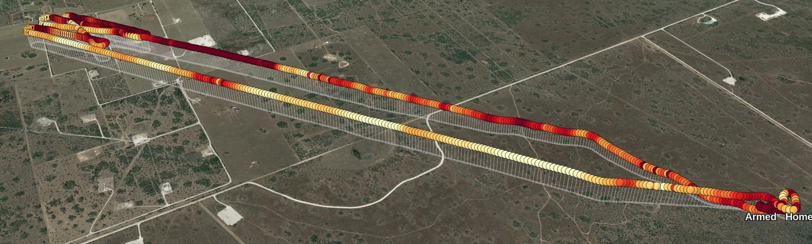
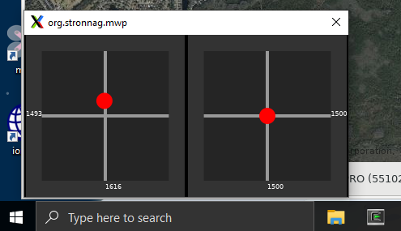

Replay Tools#
In order to replay log files, mwp has a number of external dependencies, in particular the flightlog2x fl2ltm tool provided by the bbl2kml repository. As well as providing replay tools for mwp, the bbl2kml tools offer the facility to generate attractive animated KML / KMZ files for visualisation in google-earth.



Analysis
The RSSI view shows why the aircraft is playing "failsafe ping-pong" at the right extreme of flight
bbl2kml binary packages are provided for many popular platforms.
Log replay#
mwp can replay a number of "flight log" formats. Other artefacts such as mission files / safehomes / (geozones) can be displayed while the replay is in progress.
Location rebase#
You may wish to obfuscate the location of log replay, particularly if you are publishing screen shots or vidoes. The --rebase option allows this. --rebase requires a latitude and longitude of the relocated position; the latitude and longitude may be separated by comma, semi-colon or space (the latter two quoted or shell escape) and may be decimal degrees or DD:MM:SS.ss format. The following would relocate a replay to Narita Airport in Japan (plausible denial, protect the innocent etc.):
mwp --rebase 35.761000,140.378945 -b reloc-test.TXT -m reloc-test.mission
mwp --rebase 35.761000\;140.378945 -b reloc-test.TXT -m reloc-test.mission
mwp --rebase 35.761000\ 140.378945 -b reloc-test.TXT -m reloc-test.mission
mwp --rebase "35:45:39.6N 140:22:44.2E" -b reloc-test.TXT -m reloc-test.mission
Currently (March 2024) only flight logs and mission files are rebased. Safehomes (and Geozones) may also be relocated in future.
Blackbox replay#
In order to replay blackbox logs, you additionally need inav blackbox tools, specifically blackbox_decode). Binary packages are provided for many popular platforms. The minimum required version in 0.4.4, the latest release is recommended.
OpenTX / EdgeTX logs (CRSF and Smartport)#
OpenTX enables the storage of CRSF and Smartport telemetry logs on a transmitter's SD-Card. These logs contain telemetry information transmitted from the flight controller.
mwp can replay these logs, in a similar manner to the replay of Blackbox or mwp logs, albeit with less detail and typically at lower data rates.
- Enable RX telemetry on the FC
- Enable telemetry logging on the TX
- Post flight, transfer the log from the LOGS directory of the SD card to your computer
- Replay the log using the Replay OTX Log (or Load OTX Log for a "fast-forward" rendering)
- Limited support is available of TX logs from Ardupilot.
No addition software requirements.
BulletGCSS Logs#
Requires that mwp is built with MQTT support.
No addition software requirements.
Ardupilot logs#
Requires Ardupilot's mavlogdump.py.
mwp JSON logs#
No addition requirements.
mwp "raw" logs#
mwp "raw" logs are either recorded directly in mwp (--raw-log) for indirectly using the external mwp-serial-cap tool. The logs generated by mwp and mwp-serial-cap contain meta-data describing the size and time of each item recorded; mwp can also play 3rd party logs that are 'plain' rw data (i.e. without any timing meta-data).
Recent versions of mwp contain a "Replay mwp RAW log" menu item that automates the manual process described below. This provides a dialogue to select the raw log file and an optional delay which is applied every 16 bytes read.
Otherwise it is necessary to build and install mwp-log-replay and run it outside of mwp,
# Start mwp as a UDP listener, port is arbitrary, here 40001 is chosen
## -a connect immediately without user intervention
## -d serial-device. No host part means it listens for remote connections
## listen on UDP port 40001
mwp -a -d udp://:40001
# In another terminal (even other machine if you replace localhost with the machine running mwp)
mwp-log-replay -d udp://localhost:40001 /path/to/my/logfile.raw
Raw logs containing MSP, LTM, MAVLink, CRSF and MPM Smartport and IBUS messages can be replayed.
Display of RC Stick positions#
Where such data is available, mwp can display the position of the 'sticks'. This is displayed in a separate window which by default has no Window Manager (WM) decoration.

The sticks window may be moved according the WM's rules (mwp has no part in this), for example:
- With the mouse over the sticks window, press and hold the Alt key and drag the window with the mouse, holding down the left mouse button.
- With the mouse over the sticks window, press Alt+F7. The cursor changes to a 'drag mode' cursor, and the window can be moved with the mouse (no pressing any mouse button).
Both of these techniques work in native and KVM virtualised GNOME Shell. Using other WMs or virtualisation may require other keys or may not work at all, in which case there is a settings key show-sticks to modify the behaviour:
$ gsettings describe org.mwptools.planner show-sticks
If "yes", stick position is shown during log replay,
if "no" , never shown.
If "decorated", then shown in a decorated window (for window managers
that can't cope with un-decorated windows), e.g. WSL, Cygwin
Windows 10, Cygwin with gsettings set org.mwptools.planner show-sticks decorated. Note that Cygwin and the Windows WM does not support transparency.

Linux, decorated: